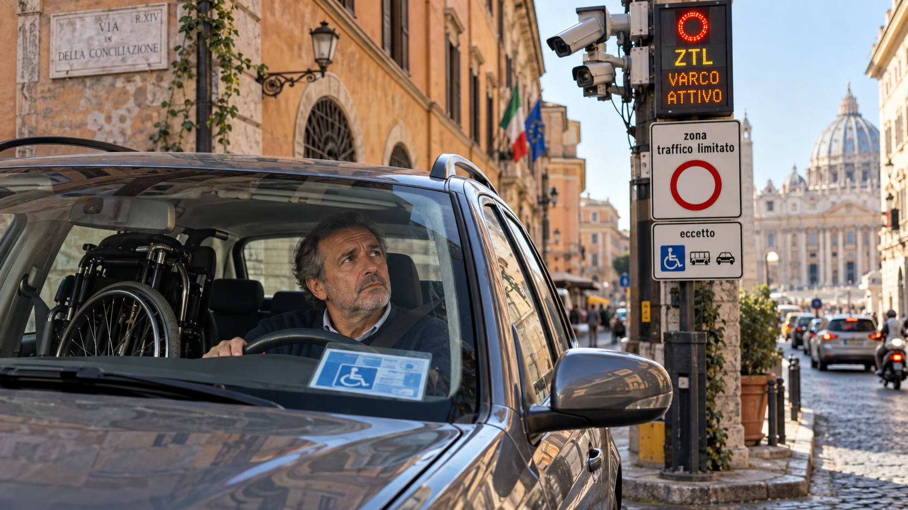

Una multa annullata a Jesi riporta l’attenzione su una questione che avrebbe dovuto essere superata da tempo: chi possiede il contrassegno disabili deve ancora comunicare la propria targa ogni volta che entra nella ZTL di un’altra città?
La risposta giuridica è più chiara di quanto facciano pensare le procedure locali.
Con l’ordinanza n. 24015 del 3 agosto 2022, la Corte di Cassazione ha affermato che il diritto della persona con disabilità a transitare nelle ZTL, nelle aree pedonali e nelle corsie riservate non può essere subordinato a un ulteriore obbligo di preventiva registrazione o comunicazione della targa al Comune.
Il punto è importante perché mette a confronto due realtà: il diritto riconosciuto alla persona e la capacità dei sistemi amministrativi di riconoscerlo automaticamente.
Un diritto legato alla persona, non all’automobile
Il contrassegno disabili è personale.
Non appartiene a una specifica automobile: può essere utilizzato sui veicoli che, di volta in volta, sono effettivamente al servizio del titolare.
È anche per questo che la Cassazione ha ritenuto illegittimo trasformare la preventiva comunicazione della targa in una condizione per esercitare un diritto previsto dalla normativa nazionale.
Le difficoltà organizzative o tecnologiche delle amministrazioni non dovrebbero diventare una barriera aggiuntiva per la persona con disabilità.
Eppure, nella vita quotidiana, questa barriera esiste ancora.
La piattaforma nazionale CUDE avrebbe dovuto risolvere il problema
Nel 2021 è stata istituita la Piattaforma Unica Nazionale informatica dei contrassegni unici, gestita attraverso il Centro Elaborazione Dati della Motorizzazione.
L’idea è semplice.
La targa associata al Contrassegno Unificato Disabili Europeo viene registrata e resa disponibile ai Comuni collegati alla piattaforma. I sistemi locali possono così verificare automaticamente che un veicolo è al servizio di una persona titolare di CUDE.
In questo modo, davanti a un varco elettronico, non dovrebbe essere più necessario telefonare, inviare una mail o compilare ogni volta un modulo per dimostrare un diritto già esistente.
Dopo una fase sperimentale, la piattaforma è diventata operativa a livello nazionale. Ma la sua efficacia concreta dipende dall’adesione e soprattutto dall’effettiva integrazione dei sistemi comunali.
Ed è qui che il quadro si complica.
Una piattaforma nazionale che non è ancora davvero nazionale
L’adesione dei Comuni non è stata uniforme e, soprattutto, non tutte le amministrazioni che gestiscono digitalmente il CUDE utilizzano necessariamente la piattaforma nazionale come strumento pienamente interoperabile con i propri varchi.
Per il cittadino la differenza è sostanziale.
Se il Comune di provenienza e quello di destinazione dialogano attraverso lo stesso sistema, la targa può essere riconosciuta automaticamente.
Se questo collegamento manca, tornano le procedure locali: registrazioni preventive, portali differenti, moduli e, nel peggiore dei casi, multe automatiche da contestare successivamente.
La conseguenza è paradossale: un diritto nazionale continua a dipendere, nella pratica, dall’architettura informatica del Comune nel quale ci si trova.
Roma: digitale, ma non ancora pienamente interoperabile
Roma rappresenta bene questa contraddizione.
Roma Capitale ha digitalizzato la gestione del CUDE. Dal 1° dicembre 2025 rilascio, rinnovo, duplicato e aggiornamento delle targhe vengono gestiti online attraverso Roma Servizi per la Mobilità.
Ma, per entrare nelle ZTL romane, la Capitale continua a utilizzare una propria banca dati delle targhe autorizzate.
La pagina ufficiale di Roma Capitale dedicata agli ingressi in ZTL con CUDE specifica che anche i titolari di un contrassegno rilasciato da un Comune diverso da Roma devono utilizzare la piattaforma di Roma Servizi per la Mobilità o rivolgersi allo sportello per aggiornare le targhe.
Dal 22 agosto 2026, inoltre, Roma consente l’accesso automatico alle ZTL con la persona con disabilità a bordo soltanto alla targa indicata come principale. La targa secondaria può essere utilizzata, ma deve prima essere resa principale attraverso l’applicativo di Roma Servizi per la Mobilità.
È un sistema digitale e organizzato, ma continua ad essere un sistema locale.
Essere digitalizzati non significa necessariamente essere interoperabili.
Ed è proprio l’interoperabilità che dovrebbe consentire a una persona titolare di CUDE di spostarsi senza dover conoscere, prima di ogni viaggio, le procedure informatiche della città nella quale sta entrando.
Il paradosso delle ZTL
Da una parte, dunque, la Cassazione afferma che l’esercizio del diritto non può essere condizionato dalla preventiva comunicazione della targa.
Dall’altra, i sistemi automatici di molti Comuni continuano ad avere bisogno proprio di quella targa per evitare di generare una sanzione.
La piattaforma nazionale era stata pensata esattamente per colmare questa distanza.
Ma finché l’interoperabilità non sarà completa, continueranno a convivere due piani diversi:
- il diritto della persona, valido sul territorio nazionale;
- la procedura informatica del singolo Comune, che può richiedere passaggi aggiuntivi per evitare una multa automatica.
Questa distinzione è importante anche sul piano pratico.
Il fatto che una procedura locale non possa cancellare il diritto non significa che sia prudente ignorarla: fino a quando i sistemi non saranno davvero collegati, seguire le indicazioni del Comune può evitare al cittadino di dover contestare successivamente una sanzione.
Ma non dovrebbe essere questa la soluzione definitiva.
Il CUDE e il nuovo contrassegno europeo non sono la stessa cosa
C’è poi un’altra distinzione che vale la pena chiarire.
Il CUDE attualmente utilizzato in Italia e la sua piattaforma nazionale delle targhe non coincidono con il nuovo Contrassegno europeo di parcheggio per le persone con disabilità previsto dall’Unione europea.
La Direttiva (UE) 2024/2841 ha infatti istituito un nuovo formato europeo comune, destinato ad essere riconosciuto reciprocamente negli Stati membri.
Il nuovo contrassegno fisico dovrà includere anche un QR code e gli Stati membri dovranno introdurre il nuovo formato entro il 5 giugno 2028. I contrassegni precedenti dovranno essere progressivamente sostituiti e, in ogni caso, il passaggio al nuovo sistema dovrà completarsi entro il 5 dicembre 2029.
Sarà quindi necessario capire come il futuro sistema europeo dialogherà con le piattaforme nazionali e con i sistemi di controllo delle città.
La tecnologia dovrebbe eliminare una barriera, non crearne un’altra
La storia del CUDE dimostra quanto il riconoscimento formale di un diritto non sia sufficiente.
Servono sistemi amministrativi capaci di renderlo concretamente esercitabile.
Per una persona con disabilità non dovrebbe essere necessario chiedersi, ogni volta che cambia città:
Il mio Comune aderisce? Quello nel quale devo entrare è collegato? Devo comunicare la targa? Quale targa è autorizzata? Devo compilare un modulo? E se arriva comunque una multa?
Sono domande che la tecnologia avrebbe già dovuto rendere superflue.
La Cassazione ha indicato con chiarezza il principio dal quale partire: non può essere il cittadino a pagare il prezzo delle difficoltà organizzative o tecnologiche delle amministrazioni.
La piattaforma nazionale esiste.
Il passo che manca è fare in modo che diventi davvero unica, interoperabile e utilizzata su tutto il territorio.
Solo allora il contrassegno sarà realmente “unificato” non soltanto nel nome, ma anche nell’esperienza quotidiana di chi lo utilizza.
---
Prima di entrare in una ZTL di un’altra città
Finché l’interoperabilità non sarà completa, è prudente verificare prima del viaggio le modalità previste dal Comune di destinazione e controllare se la targa associata al CUDE è correttamente registrata.
Questa cautela serve a evitare una sanzione automatica; non modifica il principio affermato dalla Cassazione sul diritto alla circolazione della persona titolare del contrassegno.